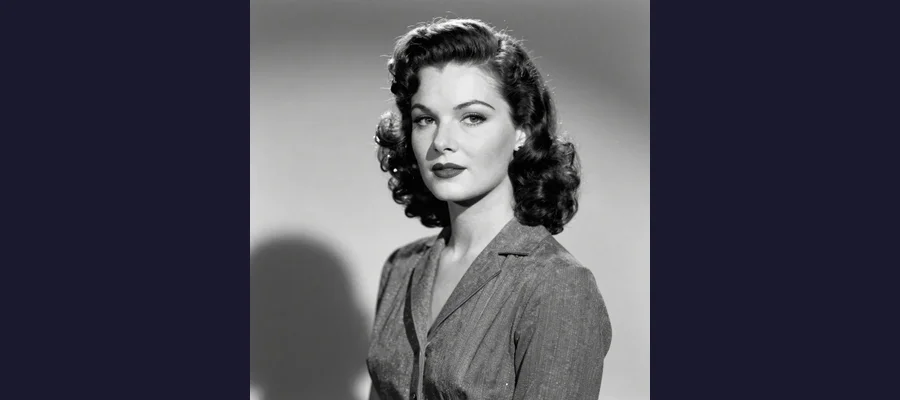
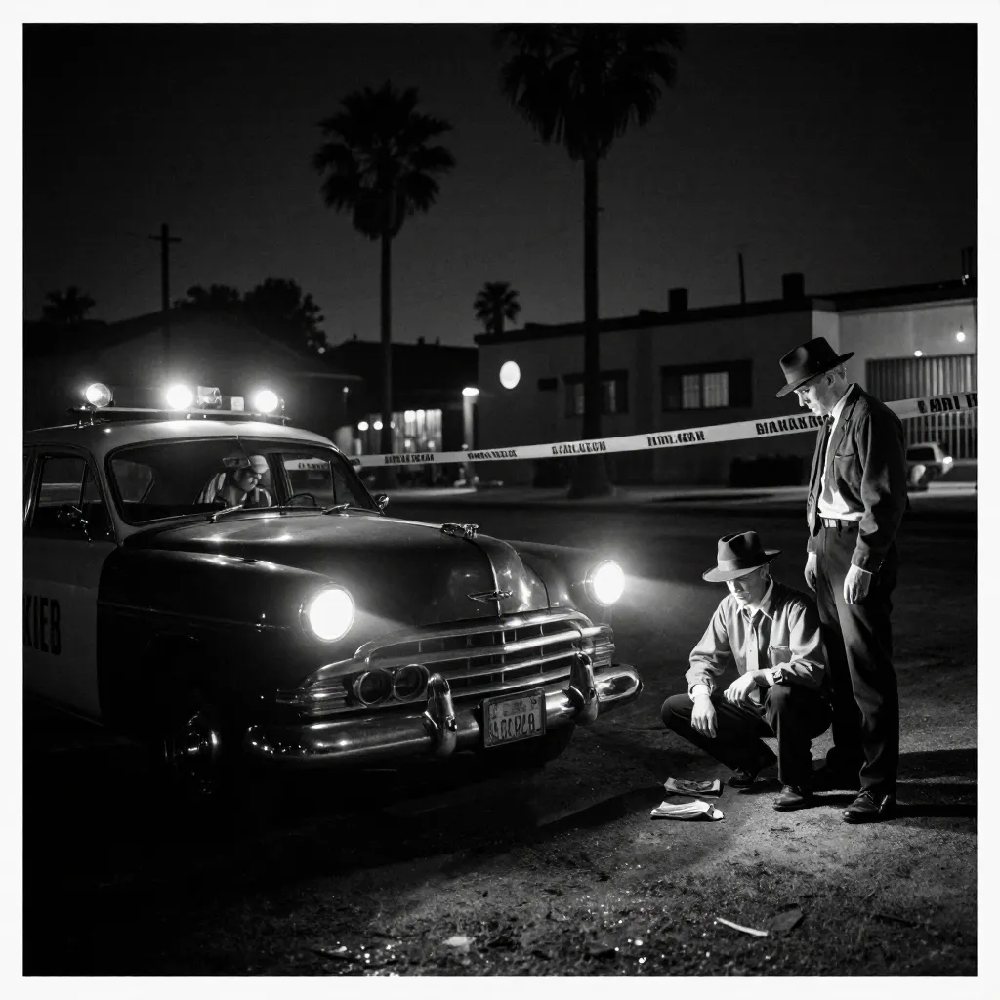

Black Dahlia: The Gruesome 1947 Murder That Remains Hollywood's Greatest Unsolved Case

The Black Dahlia murder of 1947 remains Los Angeles' oldest unsolved homicide, a case that continues to captivate and horrify nearly eight decades later.
On the morning of January 15, 1947, a young mother named Betty Bersinger was walking with her three-year-old daughter along South Norton Avenue in the Leimert Park neighborhood of Los Angeles. At around 10:30 a.m., she noticed what she thought was a discarded store mannequin lying in a vacant lot. She moved closer. The mannequin was not a mannequin at all. It was the bisected body of a young woman, severed cleanly at the waist, drained of every drop of blood, and posed with her arms raised above her head in a grotesque parody of repose. Her face had been carved with deep slashes from the corners of her mouth to her ears, creating a hideous grin known as a Glasgow smile.
The victim was Elizabeth Short, a twenty-two-year-old aspiring actress who had drifted between Boston, Florida, and California in pursuit of a dream that would never come true. Within days, the press had given her a name that would outlive her by nearly eighty years: the Black Dahlia. Her murder remains the oldest unsolved homicide in Los Angeles history, and the single most investigated murder case in the history of the LAPD. No one was ever arrested. No one was ever charged. The killer walked free, protected by the chaos of a botched investigation, a media circus that contaminated every lead, and the simple, chilling fact that the person who did this was careful enough to vanish without a trace.
The Girl Who Became the Black Dahlia
Elizabeth Short was born on July 29, 1924, in Hyde Park, a neighborhood of Boston, Massachusetts. She was the third of five daughters born to Cleo and Phoebe Short. Her father worked as a bookkeeper until the Wall Street Crash of 1929 destroyed his business building miniature golf courses. In 1930, the family received word that Cleo Short had abandoned his car by the Charlestown Bridge; it was widely assumed he had jumped into the Charles River and drowned. In reality, he had simply walked away from his family, faking his own death to escape financial ruin.
Elizabeth grew up in Medford, Massachusetts, and spent winters in Miami, Florida, where her father had once operated a miniature golf course. She was, by all accounts, a striking girl — dark-haired, fair-skinned, and petite — but also shy and somewhat introverted. She suffered from asthma and was treated with medication that may have included barbiturates. In December 1942, the family received a letter from Cleo Short, revealing that he was alive and living in Vallejo, California. The revelation stunned the family. Elizabeth, then eighteen, traveled to California in 1943 to live with her father.
The reunion was brief. Within weeks, the two clashed — Elizabeth chafed under her father’s strict rules, and Cleo grew frustrated with his daughter’s inability to hold a job. He threw her out. From that point until her death, Elizabeth Short lived a peripatetic existence, moving between California, Florida, and Massachusetts, staying with friends, boyfriends, and acquaintances. She worked briefly at the Camp Cooke military commissary in California in January 1943 and was arrested for underage drinking in Santa Barbara in August 1943. She pursued acting but never landed a professional role. She was, by the accounts of those who knew her, a young woman of modest talent and considerable beauty who was far more interested in the idea of Hollywood than in the work required to succeed there.
In the months before her death, Short lived in Hollywood, frequenting nightclubs and bars, networking with servicemen and aspiring filmmakers. She was last seen alive at the Biltmore Hotel in downtown Los Angeles on the evening of January 9, 1947. What happened to her between that night and the discovery of her body six days later remains entirely unknown.
- Born: July 29, 1924, Hyde Park, Boston, Massachusetts
- Childhood: Raised in Medford, MA and Miami, FL; father faked suicide in 1930
- 1943: Moved to Vallejo, CA to live with father; kicked out within weeks
- 1943-1946: Drifted between California, Florida, and Massachusetts
- Last seen alive: January 9, 1947, Biltmore Hotel, Los Angeles
- Body discovered: January 15, 1947, vacant lot, 3800 block of South Norton Avenue
- Official cause of death: Homicide — cerebral hemorrhage due to blows to the head and face
🗣 Why “Black Dahlia”?
The nickname “Black Dahlia” was coined by journalists in the days after the murder, reportedly inspired by the 1946 film noir The Blue Dahlia, written by Raymond Chandler. The press claimed Elizabeth Short wore sheer black clothing and black flowers in her hair, though no credible source confirms this. Short’s friends and acquaintances denied she was ever called “the Black Dahlia” during her lifetime. The name was entirely a media invention — one that transformed a real human being into a gothic symbol and ensured the case would never be treated as anything less than myth.

Elizabeth Short, the 22-year-old aspiring actress whose brutal murder in 1947 became the most famous unsolved case in Los Angeles history.
A Crime Scene From Hell: The Body on Norton Avenue
The crime scene at 3815 South Norton Avenue was, in the words of the first responding officers, unlike anything the LAPD had ever encountered. The body lay face-up on the ground, severed completely at the waist in a single, clean cut that divided the torso into two halves. The cut had been made with surgical precision, leading investigators to conclude that the killer possessed either medical training or exceptional skill with a blade.
The body had been thoroughly washed and cleaned, then posed deliberately: arms raised above the head, elbows bent, legs spread apart. The face bore three deep lacerations on each side, cutting from the corners of the mouth toward the ears — a Glasgow smile (also called a Chelsea grin), a brutal mutilation associated with gang violence in Scotland but rarely seen in American crime. The breasts had been nicked with a blade. Portions of flesh had been removed from the thighs and hips. The body was completely drained of blood, and there was no blood at the scene — not on the ground, not on the body, not anywhere. Elizabeth Short had been killed elsewhere, cleaned, drained, transported, and posed. The vacant lot on Norton Avenue was not a crime scene. It was a display case.
The autopsy, performed by Dr. Frederick Newbarr, determined the cause of death as cerebral hemorrhage resulting from repeated blows to the head and face. Short had also suffered lacerations to her wrists and ankles consistent with being bound with rope. The body showed no evidence of sexual assault, though the extent of the postmortem mutilation made this difficult to determine conclusively. The surgical bisection was performed after death. The LAPD identified the body within hours using fingerprint records on file from Short’s 1943 employment and arrest — the FBI confirmed the match in just fifty-six minutes using a primitive fax device called a Soundphoto.
🔬 The FBI’s Fastest Identification
The FBI’s identification of Elizabeth Short was remarkably swift. Using a Soundphoto — a primitive fax machine used by news services — the LAPD transmitted blurred fingerprints to the FBI’s Washington headquarters. The Bureau matched them to prints on file from Short’s 1943 job application at Camp Cooke and her arrest in Santa Barbara. The identification was made in just fifty-six minutes. The FBI also had Short’s mugshot in its files and provided it to the press, an act that contributed to the media frenzy. At the time, the FBI had over 100 million fingerprint cards on file, making the speed of the match particularly impressive.

The investigation into Elizabeth Short's murder was one of the largest in LAPD history, involving over 750 officers and 400 suspects — yet no one was ever charged.
The Investigation That Went Nowhere
The LAPD assigned the case to Detective Harry Hansen and Detective Finis Brown, both experienced investigators. The original lead detective, Will Fitzgerald, was quickly replaced. The investigation would eventually become the largest in LAPD history, generating over 1,000 pages of reports and involving more than 750 officers. And yet, it produced nothing.
From the beginning, the investigation was hampered by the media. Reporters trampled the crime scene before it could be fully secured. Newspapers published lurid — and often fabricated — details about Short’s life, portraying her as a promiscuous party girl and aspiring prostitute. In reality, acquaintances described Short as somewhat shy, conservative, and socially awkward. She was not the femme fatale the press invented, but the mythology had already taken root.
The killer — or someone claiming to be the killer — taunted the police. A series of letters and packages were sent to the LAPD and to newspapers, some containing Short’s personal belongings: her birth certificate, her Social Security card, photographs, and an address book. The letters were written in a distinctive style, using cut-out letters from newspapers and magazines in a manner reminiscent of the Zodiac Killer, who would employ similar techniques more than two decades later. Many of these communications have never been definitively attributed to the real killer and may have been hoaxes sent by copycats seeking attention.
Fifty False Confessions
One of the most extraordinary aspects of the Black Dahlia case was the sheer number of false confessions. Over fifty people came forward to claim responsibility for the murder, drawn by the notoriety of the case. Some were mentally ill. Others were seeking attention. Several were drunk. One man confessed, recanted, confessed again, and then attempted suicide on the steps of the LAPD headquarters. Every single confession was investigated and dismissed. The killer, whoever they were, did not confess.
- Dr. George Hodel — A brilliant physician and surrealist art collector who was placed under surveillance by the LAPD in 1950. His son, former LAPD detective Steve Hodel, has spent decades arguing his father was the killer.
- Leslie Dillon — A bellhop and aspiring writer who sent letters to the LAPD offering theories about the murder and became a suspect himself. He was investigated extensively but never charged.
- Mark Hansen — A nightclub owner who knew Short and was the last known person to have her address book. He cooperated with police and was eventually cleared.
- Dr. Patrick O’Reilly — A physician with a history of violence against women who was investigated and cleared.
- Robert “Red” Manley — A salesman who had dated Short and was one of the last people to see her alive. He passed a polygraph test and was cleared.
- Orson Welles — A fringe theory, based largely on coincidence and Welles’s connection to the film The Lady from Shanghai. No credible evidence supports this claim.
The George Hodel Theory
The most controversial and widely discussed suspect in the Black Dahlia case is Dr. George Hill Hodel (1907–1999), a prominent Los Angeles physician who was formally investigated by the LAPD in 1950. Hodel was a charismatic, intellectually brilliant man who counted Man Ray, John Huston, and other Hollywood luminaries among his friends. He lived in the Sowden House, a Lloyd Wright-designed mansion in Hollywood that became known for its wild parties.
Hodel came under suspicion after being arrested for the sexual abuse of his own daughter, Tamar Hodel, in 1949. He was acquitted at trial, but the investigation led LAPD detectives to place him under electronic surveillance — wiretaps on his home and office — in early 1950. The recordings, later obtained by his son Steve Hodel, reportedly captured George Hodel making incriminating statements, including the phrase: “Supposin’ I did kill the Black Dahlia. They couldn’t prove it now. They can’t talk to my secretary because she’s dead.”
In the 2000s, Steve Hodel, a retired LAPD homicide detective, published Black Dahlia Avenger, arguing that his father was not only the Black Dahlia killer but responsible for a series of other unsolved murders in Los Angeles in the 1940s. Steve Hodel pointed to his father’s medical training (explaining the surgical bisection), his artistic connections (Man Ray’s photographs bore compositional similarities to the crime scene), and the surveillance recordings. Critics have noted that the recordings are ambiguous, the circumstantial evidence is thin, and Steve Hodel’s theory requires connecting his father to crimes spanning decades and multiple states.
📖 The Novel That Kept the Case Alive
James Ellroy’s 1987 novel The Black Dahlia is widely credited with reviving public interest in the case. Ellroy, whose own mother was murdered in 1958 in an unsolved case that haunted him for decades, wrote the novel as a fictionalized investigation that blended real case details with noir melodrama. The book became an international bestseller and was adapted into a 2006 film directed by Brian De Palma, starring Josh Hartnett and Scarlett Johansson. While Ellroy’s novel was fiction, it introduced millions of readers to the real Elizabeth Short and helped transform her murder from a fading cold case into a permanent fixture of American true crime culture. Ellroy himself has acknowledged that his obsession with the Black Dahlia case was inseparable from his grief over his mother’s murder — two unsolved crimes intertwined in the dark mythology of Los Angeles.
Why the Black Dahlia Will Never Be Solved
The Black Dahlia case is, in almost every meaningful sense, a dead case. The primary suspects are all dead. The physical evidence — what little survived the LAPD’s mishandling — has degraded beyond the point of forensic utility. No DNA evidence from the crime scene has ever been matched to a suspect. The case file, thousands of pages long, sits in the LAPD archives, consulted by historians and true crime enthusiasts but generating no new leads.
The Los Angeles County District Attorney’s office officially reopened the case in 2013 after Steve Hodel presented new evidence connecting his father to the murder, but no charges were filed. In 2018, retired LAPD detective Steve Egger analyzed the taunting letters sent to police in 1947, concluding that the handwriting and linguistic patterns were consistent with George Hodel. This analysis was suggestive but far from conclusive.
The truth is that the Black Dahlia case was probably solvable in 1947. A competent, well-resourced investigation conducted without media interference might have identified the killer. But the LAPD was overwhelmed, the crime scene was compromised, witnesses were scattered, and the sheer volume of false leads and false confessions buried the genuine evidence under an avalanche of noise. By the time the investigation found its footing, the trail was cold.
The case’s cultural impact, however, has only grown. Like the undecoded pages of the Voynich Manuscript or the cipher mysteries of the Zodiac Killer, the Black Dahlia endures not because it is solvable but because it isn’t. It represents something archetypal: the beautiful young woman destroyed by an unknown hand, the city of dreams revealing its capacity for nightmare, the powerful institutions of law and order failing utterly to deliver justice. The Rosetta Stone was eventually decoded, unlocking the secrets of ancient Egypt. The Black Dahlia has no Rosetta Stone. Her story is a cipher without a key, a mystery that will remain forever unsolved — and therefore forever compelling.
⏰ The Oldest Cold Case in Los Angeles
The murder of Elizabeth Short is no longer a criminal investigation. It is a cultural artifact — a story that has been told and retold so many times that the real woman at its center has all but disappeared behind the mythology. She was not a femme fatale. She was not a prostitute. She was not the dark queen of Hollywood noir. She was a twenty-two-year-old woman from Boston who wanted to be an actress and ended up as the most famous murder victim in American history. The LAPD investigated over 400 suspects and solved nothing. The case generated over 50 false confessions and not one real one. Seventy-eight years later, the person who killed Elizabeth Short, bisected her body with surgical precision, carved a grin into her face, washed her clean, drained her blood, and posed her on a vacant lot in Los Angeles has never been identified. Like the lingering questions around the Roswell UFO incident, the Black Dahlia case persists because the official explanations feel inadequate to the horror of what happened. The truth died with the killer. The legend lives on.
Frequently Asked Questions
Who was Elizabeth Short?
Elizabeth Short (1924–1947) was a young woman from Boston, Massachusetts, who moved to California hoping to become an actress. She never achieved professional success in Hollywood and lived an itinerant life, staying with friends and acquaintances. She was last seen alive at the Biltmore Hotel in Los Angeles on January 9, 1947. Her body was found six days later in a vacant lot in Leimert Park. The press dubbed her the “Black Dahlia,” a name she never used in life.
How was Elizabeth Short killed?
According to the autopsy report, Short died of cerebral hemorrhage caused by blows to the head and face. After death, her body was severed at the waist with a clean, surgical cut, drained of blood, washed, and posed in a vacant lot. Her face was carved with a Glasgow smile, and her body bore additional postmortem mutilations. The killing and body preparation occurred at an unknown location; no blood was found at the scene where the body was discovered.
Who is the most likely suspect?
There is no universally accepted suspect. Dr. George Hodel, investigated by the LAPD in 1950 and accused by his own son Steve Hodel in the 2003 book Black Dahlia Avenger, is the most widely discussed candidate. The surveillance recordings from 1950 captured ambiguous but potentially incriminating statements. However, no physical evidence links Hodel to the crime, and the LAPD never charged him. Other suspects, including Leslie Dillon and Mark Hansen, were investigated and cleared.
Could the Black Dahlia case ever be solved?
It is extremely unlikely. All primary suspects are deceased. Physical evidence from 1947 has degraded beyond forensic utility. No DNA from the crime scene has ever been matched to a suspect. The case remains officially open but inactive. Advances in forensic genealogy have solved decades-old cases, but the Black Dahlia case lacks the usable biological evidence required for such techniques. The investigation file is preserved in the LAPD archives for historical reference.
Sources & References
- Wikipedia: Black Dahlia — Comprehensive overview of the murder, investigation, suspects, and cultural legacy
- FBI: Black Dahlia — Official FBI case summary including fingerprint identification and investigation assistance
- Wikipedia: George Hodel — Biography of the prime suspect, his career, and the accusations made by his son
- Britannica: Black Dahlia Murder — Summary of the case and its place in American criminal history
- Legends of America: Elizabeth Short — Detailed chronology of Short’s life and the investigation
- Wikipedia: Black Dahlia (film) — The 2006 Brian De Palma adaptation and its cultural impact
- The Los Angeles Lowdown: Crime Seen — The Black Dahlia — Detailed analysis of the crime scene and investigation
📖 Recommended Reading
Want to learn more? Check out Amazon.com: The Black Dahlia (Audible Audio Edition): James Ellroy, Stephen Hoye, Random House Audio: Books on Amazon for a deeper dive into this fascinating topic. (As an Amazon Associate, we earn from qualifying purchases.)